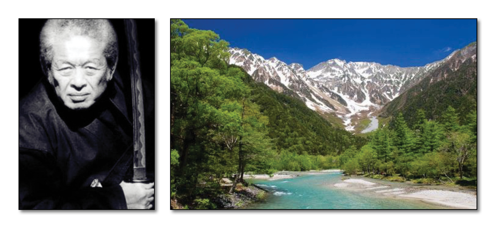

Shinden Fudo Ryû

"Tradition of the Immovable God School" - Dr. Hatsumi is the 17th Soke

It was the first ever martial art Takamatsu-Sensei studied.
The Shinden Fudo Ryu is divided into two sub-disciplines. Each one was taught separately and not everyone learned both.
Jutaijutsu (the old name for jujutsu, or grappling methods):
Goho no Kamae (Five postures)
Shoden Gata (Basic forms)
Chuden Gata (Intermediate forms)
Okuden Gata (Advanced forms)
Dakentaijutsu (Striking methods):
Ten no Kata (Basic forms)
Chi no Kata (Intermediate forms)
Shizen Chigoku no Kata (Natural 'Hell' forms)
Characteristics:
This is a school of dakentaijutsu and jutaijutsu. Dakentaijutsu has throws, strikes, locks, and kicks done in a fairly straightforward manner. It uses the body as a striking weapon and often appears "hard" in application. The shinden fudo ryu was known for its use of nature as an ally, and techniques are often very casual looking. It has many body conditioning methods using items found in nature. There are no formal postures in the school, the kamae are held in your heart. However most of the techniques start from the natural postures: shizen and fudoza. The school teaches Ono (great-axe), O-tsuchi (great-hammer), and O-dachi (great-sword). Literally translated: "divine transmission of immovability", "hard weapon body art".
Brief History:
The founder of this Ryu was Izumo Kanja Yoshiteru, who was also it's first Soke. He studied Chinese Kempo Boxing in the beginning. Some of those techniques can still be seen in this Ryu. The same person was also Soke of Kukishinden Ryu. "Foundation of Nature, Subtle Origin in the Interplay of Emptiness and Being".
The History of Shinden Fudo Ryu Dakentaijutsu:
The founder of this school, Izumo, learned Chinese Kempo boxing. Today, some of this is still noticeable within the techniques. The second soke, Minamoto Hachiman Tamenari, is credited as being the official founder. At some point in his life he fled to Iga. This was possibly a result of being on the losing side at the end of a battle. One of the secret attributes of the Shinden Fudo Ryu is the "Principle of Nature". The school has two styles of taijutsu: Dakentaijutsu and Jutaijutsu, each with its own sets of techniques. In the Dakentaijutsu, there are no stances- Shizen no kamae represents the 'natural posture' and holds no fixed form. Hojojutsu, the art of tying someone with a length of rope, is also taught in this Ryu-ha. Also taught are several different types of yari (spear), Ono (war axe), O-Tsuchi (war hammer), and naginata. Kuki Takei from the Kuki family of Kukishin Ryu was also from the Shinden Fudo Ryu. Takenaka Tetsunoke, senior student of Jigano Kano, the founder of Judo, was at one time a student at the Shinden Fudo Ryu dojo. The Bugei Ryuha Daijiten lists the soke slightly differently from below, which is the list provided by Hatsumi Sensei, and is missing the 17th and 18th soke. Toda Shinryuken Masamitsu, the 24th soke, was a samurai, and a master in the Bikenshin Ryu. He was also a sword instructor to the Tokugawa Shogunate. He was Takamatsu Sensei's grandfather, and operated a dojo that had a plaque above the door which read: "Shinden Fudo Ryu Dakentaijutsu". This was the first style that Takamatsu Sensei learned from Toda Sensei.
"The practitioner must work to cultivate an immovable spirit."
A list of rules that was written into the Densho:
- Know that endurance is simply a puff of smoke.
- Know that the way of men is justice.
- Forget the heart of greed, ease and relying on others.
- One should regard both sadness and malice as natural laws, and just gain the enlightenment of an unshakeable heart.
- In your heart, never leave the ways of loyalty and filial piety, and aspire greatly for the ways of the pen and the sword.
Observing the 5 rules above is the law of the dojo. Written at New Year, Meiji 23 (1891) Toda Shinryuken Masamitsu.
Headmasters of Shinden Fudo Ryu:
Ikai
Hogenbo, Tesshin
Sakabe, Tendo
- Izumo, Kanja Yoshiteru (Kumano) -Yeikyu Era (1113)
- Minamoto, Hachiman Tamenari -Genyei Era (1118)
- Minamoto, Hachiro Tameyoshi - Hogen Era (1156)
- Mizuhara, Kuro Yoshinari -Genkyu Era (1204)
- Mugaibo, Shinnen -Tempuku Era (1233)
- Ohkuni, Zenhachiro Yoshinobu -Bunyie Era (1264)
- Hata, Saburo Sasukeyasu
- Kotani, Yuhachiro Nobuchika -Geboko Era (1321 or 1331)
- Kaneko, Jinsuke Yoshikiyo -Shohei Era (1346)
- Tajima, Genkoro Nariyoshi -Genchu Era (1384)
- Kammon, Kokanja Yoshikane -Shocho Era (1428)
- Kimura, Hozen -Kwancho Era (1460)
- Ibuki, Yoshihaha -Bummei Era (1469)
- Otsuka, Hakushi Nyudo Tadamori -Yeisho Era (1504)
- Otsuka, Daikuro Tadahide -Taiyei Era (1522)
- Abe, Muga -Tensho Era (1573)
- Koga, Taro Kyokokaku -Tensho Era (1573)
- Katayama, Hokinokami Mori Hisayasu -Bunroku Era (1592)
- Shindo, Unsai - Kwanyei Era (1624-1644)
- Odagiri, Tohyoe Yoshihiso - Kwanyei Era (1624-1644)
- Iida, Jubee Tameyoshi -Meiwa Era (1764)
- Mori, Genroku Masahide -Bunkwa Era (1804)
- Toyota, Jubei Mitsuyoshi -Keiyo Era (1865)
- Toda, Shinryuken Masamitsu (Kobe) -Meiji Era (1824 - 1909
- Takamatsu, Toshitsugu (Nara) -Taisho Era (1909) (b.1888 - d.1972)
- Hatsumi, Masaaki (Noda) - Showa Era (1968) b.1931 -